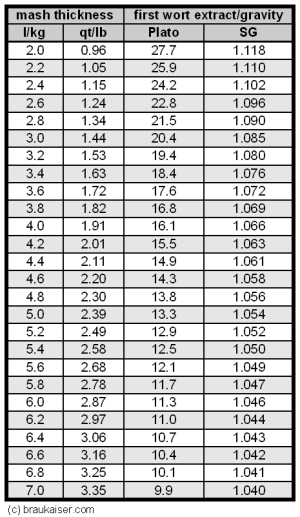

Troubleshooting Brewhouse Efficiency
|
Rather than listing all the factors that can affect the brewhouse efficiency, this article is intended to provide a systematic approach to identify and fix low efficiency related to mashing and lautering. Contents
Determining the brewhouse efficiencyBefore we can look for the causes of low efficiency we need to determine it. Since a number of different definitions exist, it is possible that the actual efficiency is in an acceptable range but was calculated based on a different efficiency formula which returned a lower result. Other error factors are incorrect gravity, volume or weight measurements. In this analysis we will focus on the efficiency into the boil kettle. The efficiency doesn’t change during the boil as no extract is lost (except for the precipitation of a fraction of the proteins in the wort). Efficiency shortcomings after the boil (i.e. transfer to the fermenter) are obvious as they are proportional to the amount of wort that is lost. For a list of various efficiency definitions see the Understanding Efficiency. Measuring and Measurement ErrorsBefore the efficiency can be calculated, 3 things need to be measured on brew day:
It is important to be reasonably accurate when measuring these values. The more precise the measurements are, the more precise the calculated efficiency will be. As an example: If the grain weight has an error of 5% (which is +/- 200g for a 4.0kg grist or 0.5 lb for 10lb), the calculated efficiency will also have a 5% error, i.e. a calculated efficiency of 70% could actually be between 66% and 74%. The same applies to volume and gravity or strength measurements. (Note: that a 5% error on 70% is +/- 3.5% since it is 5% of 70% and not 5% of 100%) The following measurement errors can be seen as reasonable:
With them the efficiency can be calculated with 5% accuracy. Measuring VolumesWhen measuring volumes on brew day, the temperature based expansion of water should be taken into account and all measured volumes should be corrected such that they represent the volume at room temperature. Since wort is mostly water, what is true for water is also true for wort. At 100 C or 212 F a given amount of water/wort has about 4% more volume than at room temperature. This means that 25 liters or quarts of wort at 100C/212F are actually 24 liters or quarts. This is a difference of 1 liter or quart and fairly significant for precise efficiency calculations. Because it results in more volume than actual, it results in a higher than actual calculated efficiency. To correct a volume measurement made at near boiling or boiling temperatures, multiply with 0.96. At mash and lauter temperatures (~ 70C / 160F) the wort volume is only by about 3% larger than at room temperature. To correct the volume measurement, multiply with 0.97. Also, take the time to calibrate or check your means of measuring the volume measurement in the boil kettle. Be it a dip-stick or markings on the kettle. To be off by 1 qt for a 6 gal is a 4% error in the calculated efficiency. Cooling a Hydrometer SampleSamples for taking hydrometer readings need to be cooled to either the hydrometers calibration temperature or at least a temperature at which it is safe to use a hydrometer. If the temperature of the sample is too hot, the glass of the hydrometer may not withstand the stress. If the sample temperature is not the calibration temperature of the hydrometer a conversion table can be used to correct the reading. Here is a [PDF that shows a number of conversion tables that can be used for converting between specific gravity and Plato and also for temperature correction. The cooling of the sample needs to happen in a manner that does not allow for the excessive evaporation of water as that would increase the samples sugar content and specific gravity. I have noticed that chilling the sample in an open bowl can increase the gravity by as much as 4 points. As a result I always cool my samples in a small lid covered jar set in ice water. Check the hydrometerIf you have already checked the calibration of the hydrometer you can proceed to Calculating Efficiency To check the hydrometer use it in water at the calibration temperature that is noted on the scale. In water the hydrometer should read 1.000 or 0.0 Bailling/Brix/Plato. If another reference point is desired, dissolve 40g of table sugar in 160g of water. The resulting solution has a sugar content of 20 Plato or 1.083 SG. But such a 2 point calibration is generally not necessary for hydrometers. If the hydrometer doesn't read 1.000 SG or 0.0 Plato in water, it doesn't have to be thrown out. Simply remember to always subtract the difference to 1.000 SG or 0.0 Plato from every hydrometer reading. Examples:
Calculating EfficiencyTo calculate efficiency two distinct approaches exist. The weight based approach calculates the weight of the extract that is present in the collected wort and puts it in relation to the total extract weight that was available in the grist. The gravity potential based approach puts the specific gravity that was achieved in relation to the maximum gravity potential that the grist has for the given wort volume. Both approaches are explained below and either one can be chosen. In addition to the two approaches shown here, the Efficiency-Troubleshooting-Spreadsheet can also be used to calculate the brewhouse efficiency. Weight based efficiency calculationThe weight based efficiency calculation is best done with metric measurements. If your measurements are not yet metric, please convert them using these formulas
To calculate the efficiency, we need to calculate the amount of extract that is present in the collected wort. Because this amount doesn't change during the boil, unless additional malt extract or sugar is added during the boil, it doesn't matter if it is calculated based on pre or post boil measurements. Just make sure that the volumes are corrected for temperature (see above):
Multiplying the volume with the specific gravity of the wort, which is basically the density of the wort, gives the weight of the wort. That is then multiplied by the wort strength expressed in Plato which expresses how much of that wort weight comes from extract (sugars, proteins, etc.). The other weight that is needed is the weight of the extract that can theoretically be extracted from the grist. When a maltster tests the malt quality one of the properties determined is the fine grind extract. It is determined by grinding the malt with a very tight mill gal (0.2 mm) mashing it with a step mash program called a Congress Mash. After that the non dissolved matter is separated from the wort. The amount of extract in that wort is then determined and expressed as percent of the original grain weight. Luckily for us, the amount of extract present in various grains (especially base malts) is fairly constant and we don't necessarily need to acquire an analysis sheet for all the malts that we used for our mash. Here is a table that lists commonly used types of malt and average fine grind extract percentages. Note, that the extract content is usually gives as percentage of the dry malt weight but that as it is stored and sold with a moisture content (MC) of 3-5%. This should be taken into account when determining the actual extract content in the malt. I.e. the dry basis extract percentage needs to be multiplied with (100% - MC)/100%.
The weight of extract in the grist is calculated as
If only little (<5%) specialty malts (crystal, roasted malts and Carfa) were used, the formula can be simplified to
The factor of 0.8 represents the average 80% extract content and is a good enough assumption for most base malts. Now that the weight of the extract in the collected wort and the weight of the extract initially present in the grain are known we can calculate the brewhouse efficiency as
Dealing with kettle additions of sugars and/or extractSome recipes require the addition of sugars or additional extract in the brew kettle. These additions can distort the calculated brewhouse efficiency if that efficiency is based on post boil measurements. To compensate for that, simply subtract the weight of the added sugar/extract from the calculated kettle extract weight before calculating the brewhouse efficiency. In case of liquid malt extract, subtract only 80% of the extract weight that was added. Or work with gravity and volume measurements that were taken before the sugar/extract was added. Examplegrist weight: 4.5 kg Pilsner malt cold post boil volume: 21 liter post boil gravity: 1.048 / 12 Plato kettle extract weight = 21 l * 1.048 * 12 / 100 = 2.64 kg extract weight in grist = 4.5 kg * 80% / 100% = 3.6 kg brewhouse efficiency = 100% * 2.64 kg / 3.6 kg = 73 % Continue to How good is my efficiency? to see how this efficiency stacks up against commonly achieved brewhouse efficiencies. Gravity potential based efficiency calculationThis type of calculation is best done with US units. If the measurements are not already available as such, used the following formulas to convert the numbers:
This calculation takes a different approach. It determines how many gravity points (the digits after the 1. in the specific gravity value) could one get from the given grist and measured wort volume with 100% brewhouse efficiency. The actual brewhouse efficiency is then the actually achieved gravity points expressed as a percentage of that theoretical maximum. To calculate the theoretical maximum, we need to know the wort volume, the weight of the grist and the gravity potential (i.e. how many gravity points can be contributed) of that grist. The latter is expressed as points per pound and gallon (pppg) and can easily be derived from the extract percentage that is listed for malts. Pure table sugar is completely soluble and adding one pound of it to a volume of water that results in 1 gal of sugar solution will result in a solution with a specific gravity of 1.046. This means that sugar has a potential of 46 pppg. Malt and many adjuncts used in mashing are not completely soluble. Only their extractable weight (Fine grind extract corrected for malt moisture content) can me made soluble in mashing. To determine their gravity potential we simply multiply the gravity potential of sugar (46 pppg) with the extract percentage from the malt spec. This has been done in the following table
The theoretical maximum for the wort gravity is:
If only a small amount of specialty grains were used, this simplified equation can be used
To get the efficiency we put the actually measured gravity points in relation to the maximum gravity points
Dealing with Kettle Additions of Sugars and/or ExtractSome recipes require sugars or additional extract to be added in the brew kettle. These additions can distort the calculated brewhouse efficiency if that efficiency is based on post boil measurements. To compensate for that, simply subtract the gravity points gained from the added sugar/extract from the actual gravity points before calculating the brewhouse efficiency. For dry extract or sugar the gravity points to subtract can be calculated as:
In case of liquid extract use 37 pppg since liquid extract are 80% extract and 20% water. Or work with gravity and volume measurements that were taken before the sugar/extract was added. Examplegrist weight = 10 lb (Pilsner malt) cold post boil volume = 5.5 gal post boil gravity = 1.048 (48 gravity points) maximum gravity points from grist = 10 lb * 37 pppg / 5.5 gal = 67.3 brewhouse efficiency = 100% * 48 / 67.3 = 71 % How good is my efficiency?Though a lot of opinions exist on what efficiency numbers are good and which ones are bad, let me try to give some guidelines in assessing the brewhouse efficiency. The following table lists a range of brewhouse efficiencies that can be expected from various brewing systems. Note that these are efficiencies measured in the boil kettle and not in the fermenter:
Another factor for the achievable efficiency, aside from the lauter method, is the amount of grain and the pre-boil volume. The larger the grist in relation to the batch size, the more wort gets trapped in that grist after running off. As a result larger beers generally show lower brewhouse efficiency. If more water is used for sparging, more of the extract can be washed out of the grain. The result is higher brewhouse efficiency but also a higher pre-boil volume which requires longer or more intensive boiling. That and the increased sparging can be detrimental to the beer quality and should not be used to fix an efficiency problem. I would consider an efficiency (assuming a regular gravity beer: up to 1.060 / 16 Plato) that is below the ranges given above as problematic and worth investigating. Only when it is known where in the process the efficiency is lost a decision can be made about if and how the efficiency should be improved. While a low efficiency can be an indication of a suboptimal mashing and lautering process, Very high efficiency does not necessarily mean the best beer possible. The latter statement is targeted at over-sparging which can lead to the excessive extraction of unwanted grain compounds (in particular tannins from the husks). The concept of conversion and lauter efficiencyThere are 2 main processes that affect the brewhouse efficiency: mashing and lautering. Mashing is a mainly bio-chemical process during which the extractable portion of the grain is made soluble through enzymatic and physical processes. The result is sweet wort in which sugars, proteins and other compounds (the sum of all that is called extract) from the grain have been dissolved. During lautering, a physical process, this sweet wort and the extract contained in it is transferred to the boil kettle while the insoluble parts of the grain (husks, cell wall structure of the endosperm, coagulated protein, etc.) are left behind. Both processes are influenced by different factors and should be evaluated separately from each other. Because of that I want to introduce the following formula for brewhouse efficiency or efficiency into the kettle:
The subsequent sections will measure and evaluate the conversion and lauter efficiency separate from each other which gives shows where in the process efficiency is lost and which process step actually needs attention. Determining Conversion Efficiency Table 1 - Extract content or gravity of the first wort based on the mash thickness. 100% mash efficiency, 80% fine grind extract and 4% moisture content of the malt were assumed for the grist To determine the conversion efficiency we simply need to measure the gravity (i.e. extract content) of the mash liquid once the mash is complete. Based on the amount of mash liquid that was used and the amount of extract that was potentially extractable from the grain, we can determine what the extract concentration in the mash should be for 100% conversion efficiency. Use the following formula or the table to the right to calculate the first wort extract content or specific gravity that would be achieved with 100% conversion efficiency Calculating the specific gravity of the first wort based on the gravity potential of the grist is more complicated since the volume to be used in that equation is not the volume of the water used but the volume of the resulting wort which is larger due to the dissolved extract and more difficult to measure. The easiest way is to calculate the water grist ratio and use the table to the right. The conversion efficiency can be estimated with this simple formula. See Measuring_conversion_efficiency for a more accurate formula. or
The Efficiency-Troubleshooting-Spreadsheet can also be used to calculate the conversion efficiency from the grist weight, water used and first wort extract/gravity. When measuring the first wort gravity or strength make sure you get a sample after recirculating the wort through the grain in order to prevent measuring wort that was simply trapped under the false bottom or in the manifold. If cooling of the sample is necessary it should be done in a way that minimizes evaporation. The conversion efficiency should be close to 100% as this would be an indication that all mash parameters (crush, temperature, pH, time, diastatic power, water/grist ratio, mash schedule) were in the correct range for full conversion. Weather or not they were in the correct range for other worth parameters (e.g. fermentability) cannot be determined at this point. If the conversion efficiency is satisfactory proceed to Determining Lauter efficiency, otherwise read on to learn about parameters that affect the conversion efficiency. Evaluating conversion efficiencyIf the conversion efficiency is less than 90-95%, test the wort and spent grain for starch with iodine. Wort is best tested for starch on a piece of chalk or drywall (Starch Test) and to test the spent grain pick up a few pieces, rub them between two fingers and add a drop of iodine solution. If they turn black-purple, they still contain starch (wash hands afterwards). If there is indeed starch in the spent grain and the conversion efficiency is especially poor (<80%), it is oftentimes the case that you can see dry starch in the middle of larger grits. That unconverted starch is the cause of the low conversion efficiency and can have multiple causes:
Determining Lauter efficiencyThere 2 ways to determine the Lauter efficiency. If batch sparging is used, it can be estimated from the total amount of water that was used and the total volume of wort that was collected. For fly and batch sparging it can also be estimated from measuring the extract that is still left in the grains after sparging. Calculating Lauter efficiency (batch sparging)The concept of calculating the lauter efficiency for batch sparging has been demonstrated in Batch Sparging Analysis. As this is a rather involved an cumbersome process I suggest taking accurate measurements of:
And then using the Batch-Sparging-Efficiency-Spreadsheet spreadsheet to calculate the theoretical lauter efficiency. Evaluating the batch sparging lauter efficiencyIf the theoretical lauter efficiency isn't close to the lauter efficiency determined from the conversion efficiency and brewhouse efficiency, the batch sparging process was suboptimal. Have a look at the following:
Run-off speed and rest time after stirring the mash don't have any impact on the lauter efficiency in batch sparging. Testing the lauter efficiency (fly and batch sparging)To some extend, the lauter efficiency can also be measured. This measurement tries to estimate the amount of extract left in the grain by diluting it with a known amount of water and measuring the extract/gravity of the resulting wort. Based on that the percentage of extract that remained in the lautertun can be estimated. While a more detailed formula can be found in [Understanding Efficiency] (not yet available), a simple table is used here.  Table 2 - Estimating the brewhouse efficiency loss in the lauter To use that table to estimate use the following procedure:
To calculate this table it was assumed that the grist had an average laboratory extract of 80%, which corresponds to an extract potential of 37 pppg, and a wort absorption rate of 0.19 gal/l or 1.58 l/kg. The Efficiency-Troubleshooting-Spreadsheet can also be used to do this calculation. Examplegrist weight = 10 lb (Pilsner malt) amount of water added = 10 qt mash liquid SG = 1.006 conversion efficiency = 95% The amount of water added corresponds to 1 qt/lb. For that amount and a mash liquid SG of 0.6 we find that 7% of the brewhouse efficiency were lost in the spent grain (i.e. 7% of the extract available in the grain were left in the spend grain as sugars dissolved in the wort).But only 95% of the grain extract were dissolved to begin with. This means that 95% - 7% = 88% must be the extract that made it into the boil kettle. Hence the lauter efficiency is the amount in the boil kettle (88%) divided by the amount that was dissolved at the start of the lauter (95%) which is a lauter efficiency of 92%. Evaluating Lauter efficiencyIf the lauter efficiency is much less than 90% for fly sparging, to many dissolved sugars were left in the spent grain. This is likely to be the result of channeling. Channeling is an effect where the sparge water doesn't rinse the grain bed evenly but finds paths of least resistance (channels). Causes of this can be a rushed run-off (the slower the better the sparge water will be able to rinse the sugars from the grains) or an inadequate manifold design. If the latter is the case, batch sparging may better be suited for the lauter tun.
Example: Making sense of the numbersHere is an example from one of my batches where I dissected the efficiency into the kettle based on the material that was presented above: The grist was 4.3 kg 100% Pilsner malt for which I assume an extract potential of 80%. I used 17 l water in the mash. This means that 100% conversion efficiency would give me a first wort extract of
But I measured a first wort extract of only 16 Plato. This means my conversion efficiency is:
In other words, 5% of the starch in the grist didn’t get converted during the mash. Since the iodine test was negative, these 5% are still in the spent grain. I then lautered the batch but wasn’t able to fit all the wort into the kettle. After I stopped running the wort into the kettle I ran it into a large measuring cup and found that I had 600 ml of wort in excess. This wort had an extract of 6 Plato. So it contained
of extract. This is ~1 % of the total extract that was available in the grain. This 1 % is not able to contribute to the efficiency into the kettle. The *0.97 is to compensate for the expansion of the wort which was at about 70C. I then gave the wort in the kettle a good stir and measured the volume and gravity. It came out to be 26 l at ~70C and 10.7 Plato. This means I got the following efficiency into the kettle:
The factor 1.043 is the specific gravity of a wort with a sugar content of 10.7 Plato. Together with the wort volume it gives the weight of the wort which is needed since Plato is a measure of weight % sugar. While the wort was heating and after I ran the grain bed dry (i.e. no more liquid was coming out of the mash tun) I closed the mash tun and added 8.6 l of cold water to the spent grain. This amounts to 2 l for each kg of initial grist. After stirring well and making sure that I also dislodged the clumps of spend grain from the bottom I tested the gravity of this water with a precision hydrometer and it was about 2.5 Plato. Looking at Table 2 (row for 2.5 Plato and column for 2 l/kg water added) this means that about 11% of the potential extract from the malt was left in the liquid that is held back by the spent grain. Based on these numbers I know now what happened to the 100% potential extract from the grain:
This sums up to only 99% and I contribute the missing 1% to inaccuracies in the measurements. Sources
|

{kind=link}
{kind=link}
{kind=link}